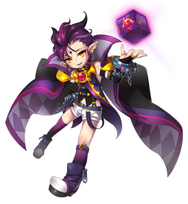
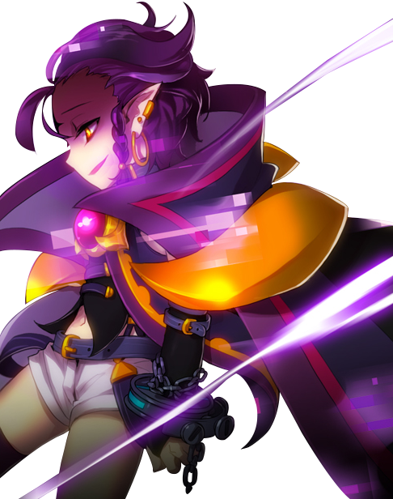
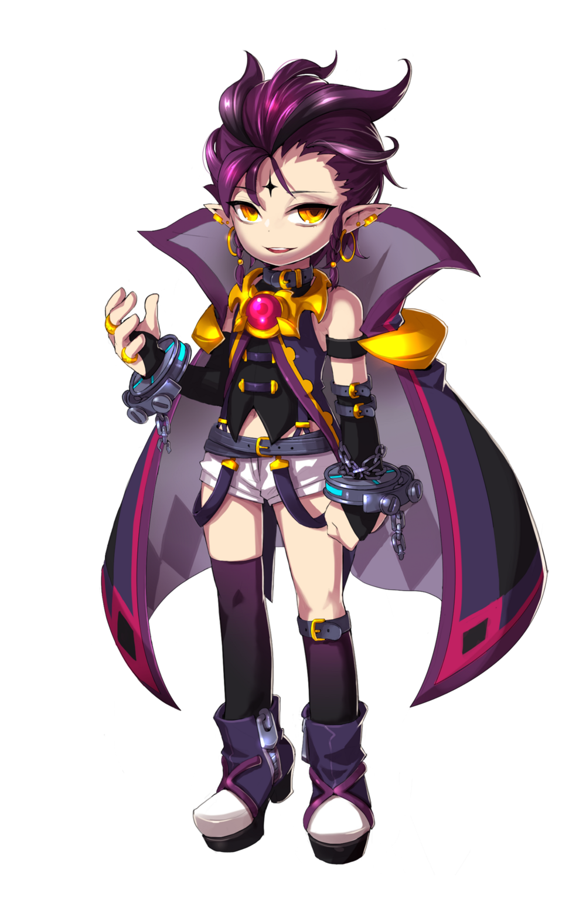

Informações Principais do Personagem
Nome: Veigas Terr
Idade: Impossível ser calculada por parâmetros humanos
Origem: Elyos
Atividade: Conversar com Deus
Gosta: Tudo que é Caos, Destruição e Morte
Ponto fraco: Alturas


Veigas Terr é o líder da família Terr, núcleo das famílias radicais, e foi um dos que enviou
seus exércitos à Primeira Guerra Mágica de Elyos contra Ernas e apesar de ser muito velho para
os padrões humanos, em Elyos ele é considerado um jovem e verdadeiro prodígio, já que até onde
se sabe, foi escolhido pelo próprio Criador para destruir outras dimensões.
Com seus planos frustrados em relação a destruir Calnat, Veigas se irritou profundamente e resolveu ir atrás de Dio, o líder da família Burning Canyon, núcleo do grupo moderador, que estava em Ernas, e destruir o asmodiano e a dimensão dos humanos com as suas próprias mãos. Ao sair de Elyos pela ponte dos mundos, Trivia, Veigas foi desafiado por um dos monstros devoradores de almas, que mencionou que ele não conseguiria ter sua vingança contra Dio, pois os Doze Discípulos entrariam em seu caminho exatamente como fizeram com Astaroth.
Com seus planos frustrados em relação a destruir Calnat, Veigas se irritou profundamente e resolveu ir atrás de Dio, o líder da família Burning Canyon, núcleo do grupo moderador, que estava em Ernas, e destruir o asmodiano e a dimensão dos humanos com as suas próprias mãos. Ao sair de Elyos pela ponte dos mundos, Trivia, Veigas foi desafiado por um dos monstros devoradores de almas, que mencionou que ele não conseguiria ter sua vingança contra Dio, pois os Doze Discípulos entrariam em seu caminho exatamente como fizeram com Astaroth.
A resposta de Veigas foi declarar a destruição de Ernas e dos Doze Discípulos por suas próprias
mãos. Com auxilio de sua poderosa arma mágica, o Tesserato (um cubo), Veigas deu início a uma
antiga profecia que dizia que o sacrifício de 12 humanos escolhidos traria de volta a paz à
Ernas.
Contudo, a profecia veio invertida do mundo dos demônios. Apesar dos avisos da Amy, que relatavam a verdade sobre a profecia, a equipe da Grand Chase não deu ouvidos à escolhida pelos deuses. Isso porque um guerreiro mágico trouxe a mensagem de que o traidor seria aquele capaz de receber oráculos, mensagens divinas. E assim teve início à profecia, trazendo de volta uma das maiores vilãs que a Grand Chase já enfrentou: Cazeaje.

Contudo, a profecia veio invertida do mundo dos demônios. Apesar dos avisos da Amy, que relatavam a verdade sobre a profecia, a equipe da Grand Chase não deu ouvidos à escolhida pelos deuses. Isso porque um guerreiro mágico trouxe a mensagem de que o traidor seria aquele capaz de receber oráculos, mensagens divinas. E assim teve início à profecia, trazendo de volta uma das maiores vilãs que a Grand Chase já enfrentou: Cazeaje.
Classes
